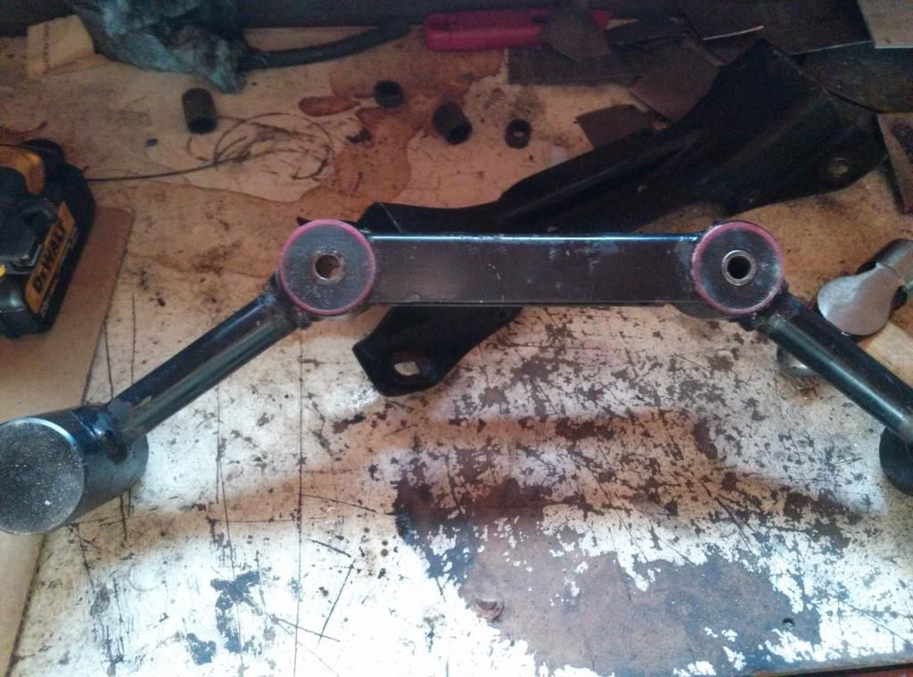

-
Hello all
does anyone know if the poly transmission harmonic bar bushings are available -
Not anymore
1988 300ZX Turbo, Shiro Special #760
1988 300ZX Turbo Automatic (wife's car)
1991 Hard-body 2WD
http://zccw.org/zccw/?page_id=1215 -
What about the aluminum x-member
or do I have to go oem -
Yes, you can buy poly crossmember bushings. Gary Molitor used to make the trans bushings but stop a while back.
1988 300ZX Turbo, Shiro Special #760
1988 300ZX Turbo Automatic (wife's car)
1991 Hard-body 2WD
http://zccw.org/zccw/?page_id=1215 -
I think hardwood made some. Can maybe convince him to make a batch of bushings. I know there is interest.http://z31performance.com/showthread…2-2-(-now-NA2T
My build thread (: -
I really should get on this now. haha I will try to get something going on monday. Material is what I need to look into. I've made them for my car and I can make them for you guys too.1985 300zx N/A - June 4 2012 Sold to Austin Irwin
1987 2+0 N/A - March 19 2014
1987 2+0 Turbo - May 6 2014 -
This. Yes please. Let us know if you need a deposit or something to buy the material?Originally posted by harwood909 View Posthttp://z31performance.com/showthread…2-2-(-now-NA2T
My build thread (: -
I will start a thread when I find the best way to make them. Keep your eyes peeled!1985 300zx N/A - June 4 2012 Sold to Austin Irwin
1987 2+0 N/A - March 19 2014
1987 2+0 Turbo - May 6 2014 -
These are the dumbbell bushings correct?
1988 300ZX Turbo, Shiro Special #760
1988 300ZX Turbo Automatic (wife's car)
1991 Hard-body 2WD
http://zccw.org/zccw/?page_id=1215 -
Yes, reddzx, as seen here from harwood909's post.....  -
I used the early style tension rod bushings from the prothan kit, threw them on a lathe after freezing them overnight… drilling was the hard part -
Harwood if you need anything to get this going please let me know
And thank you -
Harwood any luck on figuring out thies bushings -
Waiting for the quote from the salesmen at work, once I have that I can see if people are still interested. I chose to have them poured instead of machined so production will take a bit longer and price will be slightly higher than if I were to turn them on my own. The finished product will be much nicer and will have a similar appearance to pieces that come in Prothane kits.1985 300zx N/A - June 4 2012 Sold to Austin Irwin
1987 2+0 N/A - March 19 2014
1987 2+0 Turbo - May 6 2014 -
I'm down for one maybe two sets depending on price
1988 300ZX Turbo, Shiro Special #760
1988 300ZX Turbo Automatic (wife's car)
1991 Hard-body 2WD
http://zccw.org/zccw/?page_id=1215

Copyright © 2006–. All rights reserved. Privacy Policy